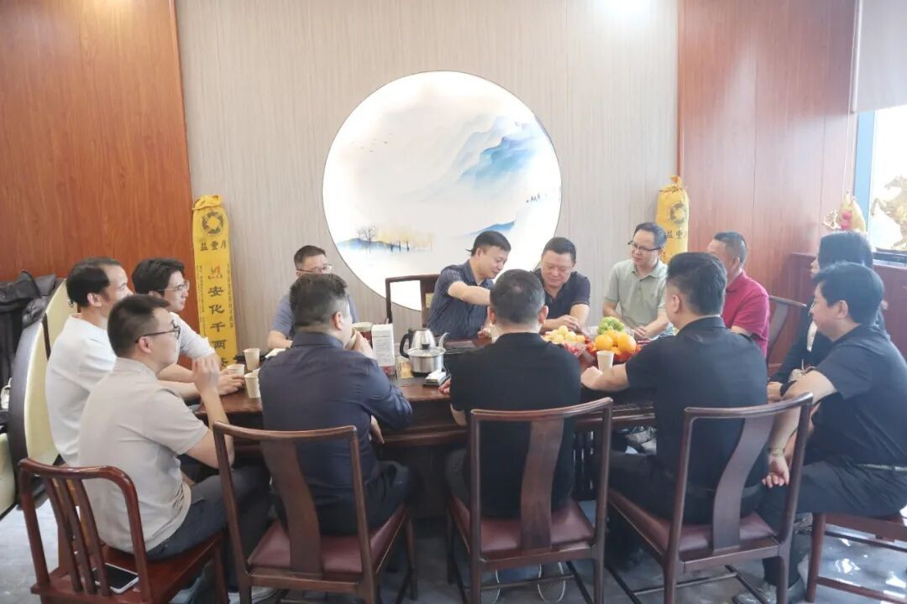
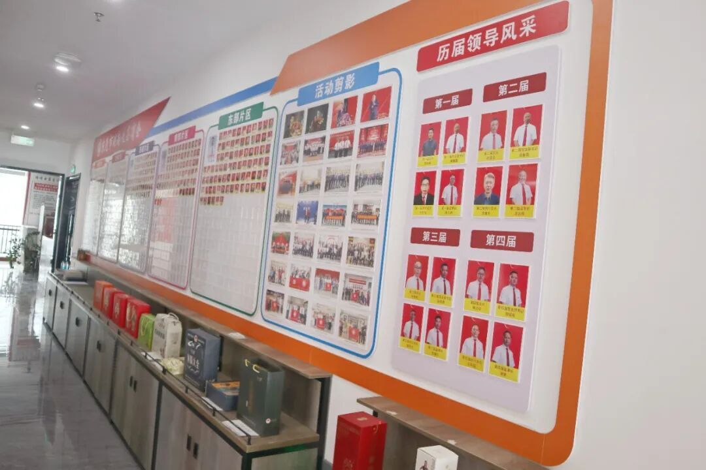
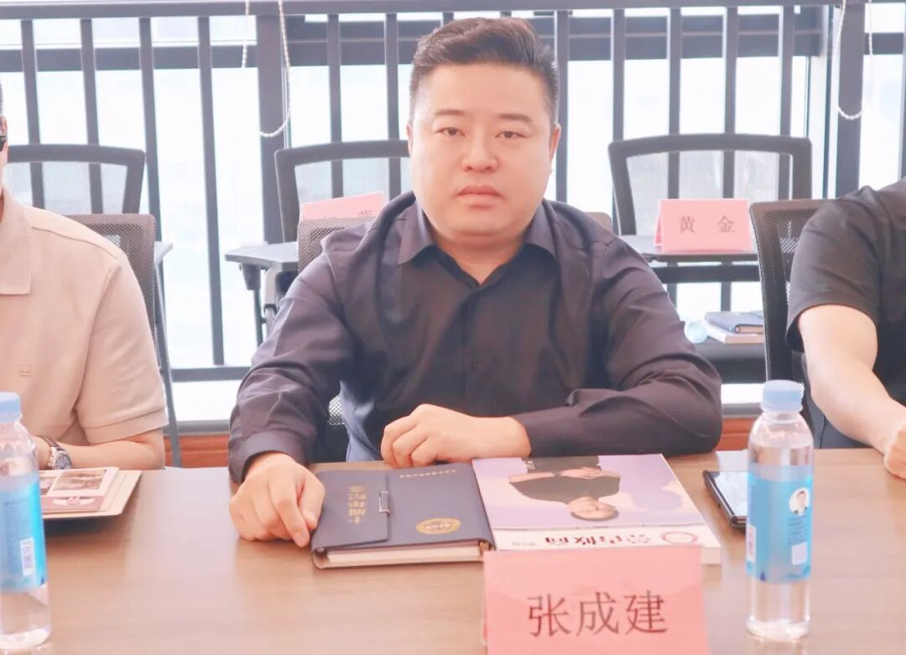
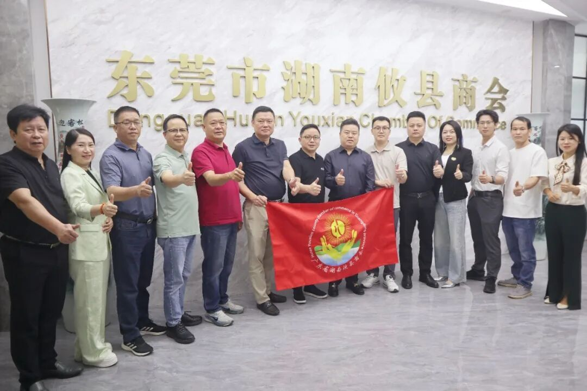
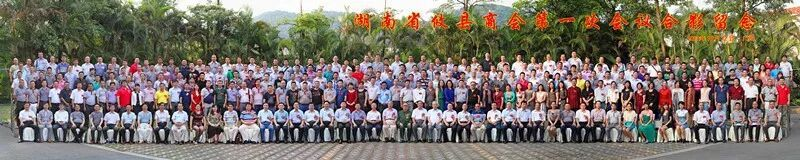

2026年11月9日，广东省湖南攸县商会会长张成建率商会成员赵子云、刘涵、许雅婷、洪权、周生生、郝海瑞及秘书处人员一行10人，赴东莞市湖南攸县商会参观交流。东莞市湖南攸县商会会长陈力平、执行会长王新国、党支部书记贺绍祖、监事长谢勇等商会领导热情接待并参加座谈。
双方围绕商会治理经验、“大攸商”电商平台战略合作及商会联盟建设等议题深入交流，达成广泛共识。
一、五个维度筑牢根基
座谈伊始，与会人员共同观看东莞市湖南攸县商会宣传片，直观感受商会在组织建设、会员服务、资源共享等方面取得的丰硕成果。商会办公室主任以“五个维度”系统介绍商会四届以来的发展实践。

班子带头奉献，是商会发展之魂。历届会长、常委班子以奉献商会为荣，一届会长任内个人付出一百五十余万元而不计回报，奉献精神届届传承，不断增强会员归属感。
服务会员为本，是商会立足之基。常委班子和秘书处围绕服务会员开展走访联络，及时协调经营与资金困难，会员互帮互助，商会方有生命力。
财务规范公开，是商会信任之要。设独立财务审核班子，秘书长不经手财务，常委会、年会首项议程即逐项通报收支；会员一次性缴费即为终身会员，成立11年来会费结余良好，透明财务赢得全体会员充分信任。

资源共享互助，是商会活力之源。班子带头为会员对接业务，同等条件优先乡友会员，会员内部相互促成的生意交易额不完全统计已超5亿元，同时明确“享受资源须先有奉献”的原则。
践行社会担当，是商会奋斗之目标。商会设有党支部、妇联等组织，当好东莞与攸县两地桥梁，引导在外企业家致富不忘根脉，有钱出钱、有力出力，反哺家乡建设与公益事业。
二、学习取经推动合作
广东省湖南攸县商会秘书长通报此行目的：全方位学习东莞商会在队伍建设、服务会员、财务规范和班子奉献精神方面的经验；同时洽谈“大攸商”电商平台战略合作事宜。平台于今年4月25日召开启动发布会，县领导到场指导，主打攸县香干、米粉、麻鸭、茶油四大地标产品，目前已上架100余款产品，运营持续向好。
广东省湖南攸县商会会长张成建在发言中感谢东莞商会核心班子悉数到场，坦言自己曾任东莞攸县商会第二届常务副会长，此次系首次完整观看商会宣传片，深受启发。

他阐述此行三重目的：一是加强兄弟商会走动互学。广东省湖南攸县商会2013年成立，带动东莞、佛山、深圳、惠州等地商会相继成立；在粤攸县乡友二十余万人，还有四分之三的攸商企业尚未加入商会，单一商会力量有限，唯有兄弟商会多走动、多结盟，多开展联谊与公益活动，凝聚合力，方能吸引更多优秀乡友加入。
二是对接“大攸商”平台合作。平台由商会会员企业耗时一年研发，不属于任何一家商会，而是全体在外攸县人共同的平台；会员优质产品免费上架，各合作商会开通独立专属通道，交易利润二八分成，分销商会得80%，平台留存20%用于运维、美工、售后，后台数据公开可查，由广州大攸商贸易有限公司实体运营、合规处理税务结算。
三是做好班子梯队培养。商会下一届会长候选人赵子云随行学习，其自购写字楼中提供四百平方米免费装修供商会永久使用；特别是东莞商会在以商养会方面有丰富的经验和丰硕的成果，是他此次学习的重要内容。
张成建会长建议，在粤攸县籍商会之间一年至少开展两次交流活动，联合行动方能扩大影响力。

三、全力支持共推落地
东莞市湖南攸县商会会长陈力平对省商会一行表示热烈欢迎。他指出，广东省湖南攸县商会是攸县人在广东成立的第一家商会，2013年成立后带动各地商会陆续组建；商会初心是让老乡聚在一起交流，助力个人成长与事业发展，整合资源、抱团取暖。
陈力平会长对“大攸商”平台给予高度评价。他表示，平台出发点极具情怀，核心是推广攸县本土特产、赋能家乡企业、探索以商养会，是利他利己、利乡利企的大好事。东莞商会此前也曾考虑自建线上小程序，但因运营、品控、结算、售后等繁杂问题，仅做信息展示而未开通交易；省商会已将整套模式跑通，成立实体运营公司，各兄弟商会无需重复投入，直接用好共建共享平台即可。
平台合作条件实在——会员产品免费上架、专属通道、利润八二分成、后台数据透明可查，打消了此前的诸多顾虑。他同时提出落地细节：严把资质关口，小作坊无资质产品不得上线；完善产品信息，清晰标注品牌厂家；做好品控、美工与售后，及时淘汰动销差的产品。按照商会议事规则，此事交由双方秘书处专项对接，细化操作流程、产品征集与推广方案，提交常委会集体审议通过后，再正式组织会员产品征集与内部推广。
陈力平会长最后表示，兄弟商会之间要抱团发展、资源互通，既要服务好在粤广大会员，也要心系家乡、反哺故土。期待双方以此次对接为契机深化协作，把“大攸商”平台这件实事办好，也祝愿各攸县兄弟商会越办越好。
四、联盟共建互利共赢
根据双方前期沟通形成的《“大攸商”电商平台战略合作协议》框架，乙方入驻商城成为分销商，组织会员推广商城及产品，推荐会员企业优质产品上架销售，并按协议获取收益。合作收益按可分配利润分成，平台方分20%用于平台管理维护，分销商会分80%，分成规则以对账单为准并公开透明。协议对产品管理、价格与分成、售后响应、结算提现、违约责任等作出明确约定，为合作落地提供制度保障。
双方以“大攸商”商城为平台，联合在粤攸县籍商会、行业协会，共享会员、产品、渠道资源，助推家乡产品、赋能会员企业；双方双重背书、严选品质，共建“商会联盟·品质好物”品牌，抱团发展、互利共赢。

座谈中，双方还就商会凝聚力与影响力提升达成共识：当前会员覆盖率仍有提升空间，单一商会力量有限、吸引力不足，需在粤各攸县商会齐心联合，多组织联谊活动，吸引更多优秀企业加入；齐心后可联合开展爱心公益、乡村振兴、返乡助农等有意义的事业，在政府心目中建立影响力，争取政府层面支持；建议优先一年做两次联合活动，以联合行动扩大整体影响力。
此次交流学习，既是一次乡情联谊的温馨相聚，更是一次商会治理经验的深度碰撞与合作发展的战略对接。广东省湖南攸县商会以谦逊姿态求学问道，东莞市湖南攸县商会以开放胸怀分享经验，双方在“大攸商”电商平台战略合作上达成重要共识，在商会联盟建设上凝聚广泛合力。以平台为纽带、以联盟为路径、以乡情为根基，在粤攸县籍商协会正携手走出一条抱团发展、互利共赢的坚实道路，必将为服务会员成长、赋能家乡振兴贡献更大力量。